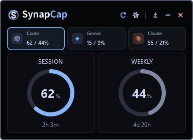
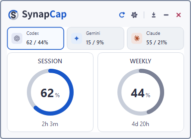

62%
2h 3m
최신 공개 버전 확인 중
AI 한도,
작게 띄워두고
한눈에.
Codex, Gemini, Claude의 5시간·주간 구독 사용량과 리셋 시간은 위젯에서, 가장 중요한 수치는 트레이 아이콘에서 한눈에 확인하세요.
무료 · 오픈소스 · API 키 불필요 · 사용량은 로컬 도구에서 조회
Dark & Light
환경에 맞춰 자연스럽게
시스템 테마를 따르거나 다크·라이트 테마를 직접 선택할 수 있습니다.
다크 테마

라이트 테마

필요한 정보만
작지만 충분한 위젯
선택한 모델에 집중
상단 탭에서 모델을 고르면 세션과 주간 사용량을 큰 링 두 개로 바로 보여줍니다.
한도를 내 방식대로
5시간·주간 한도를 고르고 선택한 임계치에 도달할 때만 알림을 받을 수 있습니다.
리셋까지 바로
각 링 아래에 다음 리셋까지 남은 시간을 함께 표시해 한도와 여유 시간을 빠르게 파악합니다.
로컬 우선
API 키를 서버로 보내지 않고 로그인된 로컬 클라이언트에서 조회합니다.
세 단계 표시 모드
펼침·막대·트레이만으로 밀도를 바꾸고, 트레이에는 최고 사용률이나 선택한 서비스의 숫자를 상시 표시합니다.
검증형 원클릭 업데이트
새 버전을 알리고 운영체제에 맞는 설치 파일을 내려받아 SHA-256 확인 후 설치를 이어갑니다.
Download
내 운영체제에 맞게 설치
GitHub Release에서 최신 버전 정보를 확인하고 있습니다.
Windows
Windows 10/11 · 64비트
macOS
Apple Silicon · M1 이상
macOS Intel
Intel 기반 Mac
Windows에서 “일반적으로 다운로드되지 않음”이 표시되나요? 악성 파일 판정이 아니라 아직 코드 서명과 다운로드 평판이 없는 새 파일에 표시되는 경고입니다. 공식 GitHub Release에서 받은 파일인지 확인하고 SHA-256 체크섬과 GitHub 빌드 출처 증명을 검증한 뒤에만 Edge 다운로드 패널의 유지 → 더 보기 → 그래도 계속을 선택하세요. 출처나 해시가 다르면 파일을 삭제하세요.
macOS first launch
처음 실행할 때 차단된다면
현재 설치본은 Apple 개발자 서명·공증 전입니다. 공식 Release 파일과 SHA-256을 확인한 경우에만 SynapCap 하나를 예외로 허용하세요.
- 1응용 프로그램에 설치
DMG를 열고 SynapCap을 응용 프로그램 폴더로 옮깁니다.
- 2한 번 실행
SynapCap을 실행하고 보안 경고가 나오면 확인 또는 완료로 닫습니다.
- 3그래도 열기 허용
Apple 메뉴 → 시스템 설정 → 개인정보 보호 및 보안 → 아래쪽 보안에서 그래도 열기를 누릅니다.
- 4열기 확인
암호 또는 Touch ID로 승인하고 다시 나타나는 창에서 열기를 선택합니다.
다시 설치할 필요는 없습니다. 승인 후 응용 프로그램 폴더에서 다시 실행하세요. `그래도 열기` 버튼은 첫 실행 시도 후 약 1시간 동안 표시됩니다. Apple 공식 안내 ↗
Before installing
웹 채팅이 아닌
로컬 로그인 기준
SynapCap은 각 서비스의 로컬 앱 또는 CLI가 제공하는 구독 한도를 읽습니다. 웹 채팅만 사용하는 계정의 사용량은 조회하지 않으며 별도의 유료 API를 호출하지 않습니다.
Claude 사용량은 Claude Code CLI 기준입니다. 실행 중인 Claude 화면이 먼저 갱신되면 SynapCap 값에는 수분 뒤 반영될 수 있으며, 앱의 프로바이더·사용량 툴팁에서 출처와 마지막 조회 시각을 확인할 수 있습니다.
Windows·macOS CLI 설치 순서 보기CodexCodex CLI · Windows는 Codex 앱도 지원
설치·로그인 필요GeminiAntigravity CLI 설치 및 로그인
설치·로그인 필요ClaudeClaude Code CLI 설치 및 로그인
설치·로그인 필요CLI setup · Windows & macOS
처음이어도, 설치부터 로그인까지
기본 연동 3종 중 사용하는 서비스만 준비하세요. 아래는 별도 패키지 관리자 없이 공식 설치 스크립트를 사용하는 방법입니다.
01 내 운영체제에서 CLI 설치
02 새 터미널에서 버전 확인
03 구독 계정으로 로그인
04 SynapCap 완전 종료·재실행
명령어는 해당 서비스의 공식 설치 프로그램을 내려받아 실행합니다. 먼저 각 카드의 공식 설치 안내와 주소를 확인하고, 회사 PC에서는 관리자 정책을 따르세요. 설치만으로 모든 계정에 구독 한도가 생기지는 않습니다.
Windows 10 / 11Windows PowerShell에서 진행
터미널 열기: 시작 메뉴에서 PowerShell을 검색해 실행하세요. 아래 Windows 명령은 명령 프롬프트(CMD)·Git Bash·WSL이 아닌 PowerShell에 한 줄씩 붙여 넣고 Enter를 누릅니다.
Codex ChatGPT 구독 계정
- CLI 설치
irm https://chatgpt.com/codex/install.ps1 | iex - PowerShell을 닫고 새로 열어 확인
codex --version버전 번호가 나오면 설치가 확인된 것입니다.
- ChatGPT 계정으로 로그인
codex login브라우저에서 사용량을 확인할 ChatGPT 계정으로 로그인하세요. 구독 조회용이므로 API 키 로그인과 혼동하지 마세요.
Gemini Antigravity CLI · agy
- Antigravity CLI 설치
irm https://antigravity.google/cli/install.ps1 | iex - 새 PowerShell에서 확인
agy --version이름은
gemini가 아니라agy입니다. - 처음 실행하고 Google 계정 로그인
agy초기 안내를 마치고 사용하는 Google 계정으로 로그인하세요. 터미널이 인증 코드를 요청하는 경우에만 브라우저의 코드를 붙여 넣고 Enter를 누릅니다.
Claude Claude Code 구독 계정
- Claude Code 설치
irm https://claude.ai/install.ps1 | iex - 새 PowerShell에서 확인
claude --version설치 중 진행 표시가 없을 수 있으니 완료 안내를 기다리세요.
- 처음 실행하고 Claude 계정 로그인
claude브라우저에서 Claude Code를 사용할 수 있는 Claude 구독 계정으로 로그인하세요. 웹 채팅 로그인만으로 CLI 인증이 끝나지는 않습니다.
Windows에서 주의: WSL에만 설치한 CLI·로그인 정보는 Windows용 SynapCap이 자동으로 찾지 못할 수 있습니다. 이 안내는 Windows 네이티브 설치 기준입니다.
macOSApple Silicon·Intel 공통 · 터미널에서 진행
터미널 열기: ⌘ + Space로 Spotlight를 열고 터미널을 검색하세요. 사용하는 서비스의 명령만 한 줄씩 실행합니다. 비밀번호 입력 중에는 글자가 표시되지 않을 수 있습니다.
Codex ChatGPT 구독 계정
- CLI 설치
curl -fsSL https://chatgpt.com/codex/install.sh | sh - 새 터미널에서 확인
codex --version버전 번호가 나오면 설치가 확인된 것입니다.
- ChatGPT 계정으로 로그인
codex login브라우저에서 구독 계정으로 로그인합니다. 로그인 상태는
codex login status로 확인할 수 있습니다.
Gemini Antigravity CLI · agy
- Antigravity CLI 설치
curl -fsSL https://antigravity.google/cli/install.sh | bash - 새 터미널에서 확인
agy --version기존 Gemini 웹 로그인과 CLI 로그인은 구분해 확인하세요.
- 처음 실행하고 Google 계정 로그인
agy초기 안내와 브라우저 로그인을 마칩니다. 인증 코드 입력을 요청받으면 실행 중인
agy터미널로 돌아와 입력하세요.
Claude Claude Code 구독 계정
- Claude Code 설치
curl -fsSL https://claude.ai/install.sh | bash - 새 터미널에서 확인
claude --version작동 여부를 더 확인하려면
claude doctor로 설치 진단을 볼 수 있습니다. - 처음 실행하고 Claude 계정 로그인
claudeClaude 구독 계정을 선택하고 브라우저에서 승인하세요. API·Console 인증은 구독 사용량과 같은 기준이 아닙니다.
macOS에서 주의: 앱에 임의의 전체 디스크 접근 권한을 부여하거나 보안 기능을 끌 필요는 없습니다. 명령을 찾지 못하면 아래 경로 확인부터 진행하세요.
로그인까지 마쳤다면, SynapCap에 반영하기
- 트레이·메뉴바의 SynapCap 메뉴에서 종료한 뒤 다시 실행합니다. 창을 트레이로 접는 것만으로는 완전 종료되지 않습니다.
- 설정 → AI Providers에서 사용하는 서비스가 활성화돼 있는지 확인합니다.
- 새로고침을 누르고 조회가 끝날 때까지 기다립니다. 값이 없으면 표시된 상태를 눌러 진단 정보를 확인합니다.
로그인·버전 확인만으로 연동을 준비할 수 있습니다. 확인을 위해 AI에게 유료 작업을 요청하거나 토큰·인증 파일을 SynapCap에 붙여 넣을 필요는 없습니다.
설치했는데 ‘명령을 찾을 수 없음’이 나와요
먼저 터미널을 완전히 닫고 새로 여세요. Windows PowerShell에서는 Get-Command codex, Get-Command agy, Get-Command claude로 설치 경로를 확인합니다. macOS에서는 command -v codex, command -v agy, command -v claude를 사용하세요. 경로가 나오지 않으면 해당 서비스 공식 문서의 PATH 안내를 따릅니다.
브라우저에서는 로그인했는데 위젯은 ‘로그인 필요’예요
같은 PC·운영체제의 CLI에서 로그인했는지 확인하세요. 웹사이트나 WSL에만 로그인한 상태는 다를 수 있습니다. 해당 CLI를 직접 실행해 인증을 마친 뒤 SynapCap을 재시작합니다. Antigravity 인증 코드가 표시돼도 터미널이 요청하지 않으면 임의로 붙여 넣지 마세요.
설치 스크립트 실행이 차단되거나 계속 조회 오류가 나요
PowerShell·CMD·macOS 명령을 섞어 쓰지 않았는지 확인하세요. 조직의 보안 정책을 임의로 해제하지 말고 공식 설치 안내나 관리자에게 문의하세요. CLI 버전과 로그인이 확인됐다면 위젯의 오류 상태에서 진단 보고서를 확인합니다. 토큰·계정 인증 파일은 공유하지 마세요.
공식 문서 확인: 2026-11-09 · 명령과 로그인 화면은 서비스 업데이트에 따라 바뀔 수 있습니다. 각 카드의 공식 안내를 우선 확인하세요.
Troubleshooting
오류 문구에서 바로 해결까지
카드의 상태 배지를 누르면 CLI 감지 경로와 해결 안내가 열립니다. 사용하지 않는 서비스는 설정에서 비활성화할 수 있습니다.
CLI를 찾지 못했어요
해당 서비스의 CLI를 설치하고 --version으로 확인한 뒤 한 번 실행해 로그인합니다. 사용하지 않는 서비스는 설정에서 숨길 수 있습니다.
인증이 없거나 만료됐어요
터미널에서 해당 CLI를 직접 실행합니다. Antigravity가 인증 코드 입력을 요청하면 브라우저의 코드를 agy 터미널에 붙여 넣고 Enter를 누릅니다.
응답이 늦어졌어요
네트워크와 실행 중인 CLI를 확인한 다음 SynapCap에서 다시 새로고침합니다.
진단 정보를 확인하세요
상태 배지를 눌러 원인을 확인하고 토큰이 없는 진단 보고서를 복사해 Issue에 첨부할 수 있습니다.
Safe updates
한 번 선택하고, 안전하게 업데이트
업데이트를 선택한 뒤 공식 Release 파일을 검증하고 운영체제에 맞는 설치 단계까지 이어갑니다.
새 버전 확인
앱 시작 시 최신 공개 버전을 확인하고, 업데이트 뒤에는 해당 Release 안내를 최초 한 번 표시합니다.
다운로드·검증
업데이트가 있을 때 나타나는 상단 버전 표시나 트레이 메뉴를 누르면 운영체제별 파일과 체크섬을 공식 Release에서 받아 SHA-256을 자동 확인합니다.
설치 이어가기
Windows는 UAC 승인 후 자동 설치·재실행합니다. 미서명 macOS 버전은 검증된 DMG를 열어 앱 교체만 남겨 둡니다.
v0.1.4 이하를 사용 중인가요? 원클릭 기능이 없는 기존 버전에서는 이번 한 번 최신 Release 설치 파일을 직접 받아야 합니다. 그 다음 버전부터는 앱 안에서 업데이트할 수 있습니다.
Local by design
계정 정보는
내 컴퓨터에
API 키 수집 없음기존 로컬 CLI 로그인 상태를 사용하며 SynapCap 서버는 없습니다.
설정도 로컬 저장프로바이더 선택과 위젯 환경설정은 사용자 컴퓨터에만 저장됩니다.
MCP 설정 보존사용자의 MCP 설정을 삭제하거나 일괄 비활성화하지 않습니다.